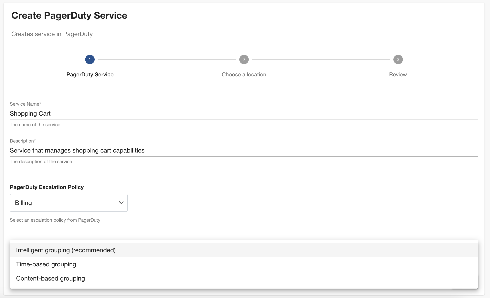
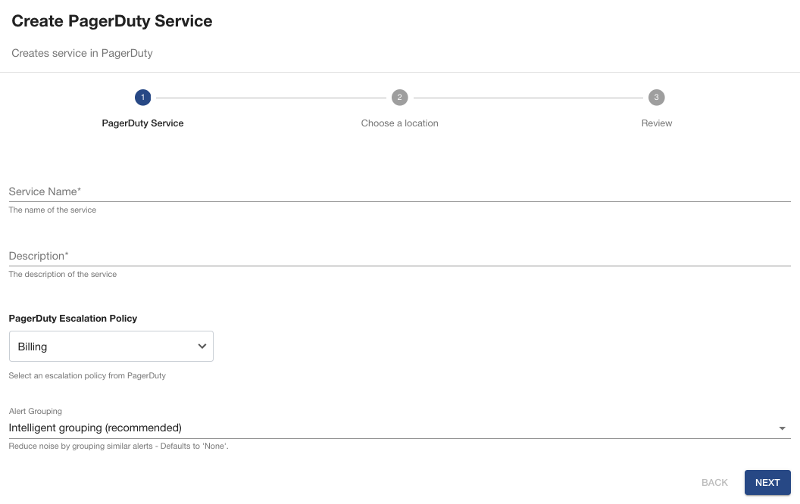

Release notes for Backend plugin
> 0.9.1
Summary
This release introduces a few enhancements that to ensure a) no undesired code is executed when an exception is caught, and b) to avoid trying to emit headers multiple times.
Changes
- fix: add missing "return" statements after errors
Dependencies
@pagerduty/backstage-plugin-common: 0.2.1
> 0.9.0
Summary
This release introduces a set of features that were in a way dependent on each other which makes it quite large when compared to a typical release.
- Automated Backstage integration setup for mapped entities: With the goal of simplifying the setup process for mapped entities we introduced a feature that automatically creates a integration on the corresponding PagerDuty service when a
pagerduty.com/service-idproperty is available.
With this feature, admins can skip the step of creating an integration in PagerDuty and copy the integration key to each Backstage entity file. They can now simply add the pagerduty.com/service-id annotation to their service, or simply use the PagerDutyPage to map existing PagerDuty services to Backstage entities and the plugin will take care of the rest.
-
Plugin configuration persistence layer: To support two-way sync for service dependencies we decided to give the admins the option of choosing which is their main source of truth and for that reason we introduced a new section in
PagerDutyPagewhere you can specify your preferences. The backend centralises all the persistence layer and this release includes all the necessary methods for it. -
Two-way service dependency sync: This release introduces a way to keep your service dependencies in sync between PagerDuty and Backstage. Admins will be able to choose which source is the main one. This is an opt-in feature that you can enable on the
PagerDutyPageunder theconfigurationtab.
‼️ Important: Due to a Backstage design decision it is not possible to fully overwrite the relations specified in each entity's configuration file. For that reason the option to synchronise strictly from PagerDuty side is not available.
Changes
- feat: service dependency sync
Dependencies
@pagerduty/backstage-plugin-common: 0.2.1
> 0.8.2
Summary
This release fixes some potential issues with JSON.parse on unsafe parameters that can lead to unexpected exceptions.
Changes
- chore: refactor JSON.parse usage on unsafe code
Dependencies
@pagerduty/backstage-plugin-common: 0.2.0
> 0.8.1
Summary
This release bumps all Backstage packages to the latest version to allow an upgrade to 1.29.1 without any warnings on outdated packages.
Changes
- fix: bump deps to work with backstage v1.29.0
Dependencies
@pagerduty/backstage-plugin-common: 0.2.0
> 0.8.0
Summary
This release introduces the necessary changes to support multi-account configurations.
- Plugin database now supports account reference
- All PagerDuty API operations are account aware
- Updated plugin configuration schema to accept multi-account configurations
We made extensive tests to ensure that the existing configuration for a single PagerDuty account still works. Therefore existing customers will be able to upgrade to the latest version without breaking anything.
Changes
- feat: add support for multiple accounts
Dependencies
@pagerduty/backstage-plugin-common: 0.2.0
> 0.7.2
Summary
This release handles properly an exception that was causing the entity mapping page to break when there is an integration key specified in the entity configuration and that integration key doesn't exist in the PagerDuty Account.
Previously it would return an HTTP 404 error, causing the application to break. Now, it handles that error without breaking the application.
Changes
- fix: ignore invalid integration keys when building entity reference dict
Dependencies
@pagerduty/backstage-plugin-common: 0.1.5
> 0.7.1
Summary
PagerDuty advocates for full-service ownership and one recommendation on that direction is for customers to associate teams with services to state clear ownership of that service. Still, this is not enforced and therefore some customers don't have teams configured.
This release ensures the backend handles empty teams arrays gracefully to prevent the PagerDutyPage component from staying in a loading state indefinitely.
Changes
- fix: handle empty teams array to prevent TypeError
Dependencies
@pagerduty/backstage-plugin-common: 0.1.5
> 0.7.0
Summary
Release 0.7.0 adds support for new entity mapping APIs to be used by the frontend component to allow easy onboarding of existing services from PagerDuty into Backstage. This is a highly requested feature that aims to ease the process of onboarding existing PagerDuty services into Backstage.
This release includes new API endpoints to:
- Get all entity mappings persisted to the database
- Get an entity mapping for a specific Backstage Entity reference
- Persist mappings into the database
These APIs introduce the needed mechanisms to persist data into the database selected by the Backstage Admin. The database table is automatically generated and is exclusively used by PagerDuty plugin Backstage to ensure data segregation.
This release also includes a few security fixes on dependencies used by the Backstage packages.
Changes
- feat: entity mapping persistence
- build(deps): Bump @azure/identity from 4.0.1 to 4.2.1
- build(deps): Bump mysql2 from 3.9.7 to 3.10.0
- build(deps): Bump ws from 8.14.2 to 8.17.1
Dependencies
@pagerduty/backstage-plugin-common: 0.1.5
> 0.6.1
Summary
This release adds security patches to fix two moderate and two critical vulnerabilities on mysql2 dependency.
Changes
- build(deps): Bump mysql2 from 3.9.4 to 3.9.7
- build(deps): Bump mysql2 from 3.9.2 to 3.9.4
Dependencies
@pagerduty/backstage-plugin-common: ^0.1.2
> 0.6.0
Summary
This release adds support to the new Backstage backend system without forcing users to move to the new backend system if they choose to stay in the legacy backend system for now.
Warning: Existing backend plugin users need to make some changes in code because we had to extract the Scaffolder actions to a separate Backstage module (@pagerduty/backstage-plugin-scaffolder-actions).
For existing users using the legacy backend system
-
Install new package
-
Update your existing reference in
packages/backend/src/plugins/scaffolder.tsfrom the backend component to the new one -
Pass the environment config and logger to
createPagerDutyServiceAction
For users using the new backend system
-
Install new package
-
(Optional) If this is the first time configuring PagerDuty's plugin you also need the following packages
-
Add the package to your backend in
packages/backend/src/index.ts
Changes
- build(deps): Bump tar from 6.2.0 to 6.2.1
- chore: add support to new backend system
Dependencies
@pagerduty/backstage-plugin-common: ^0.1.2
> 0.5.2
Summary
This release introduces a couple of security patches related to dependencies.
- express
- webpack-dev-middleware
Changes
- build(deps): Bump webpack-dev-middleware from 5.3.3 to 5.3.4
- build(deps): Bump express from 4.18.2 to 4.19.2
Dependencies
@pagerduty/backstage-plugin-common: ^0.1.2
> 0.5.1
Summary
This release fixes a bug related to missing API scopes that was preventing the new capabilities introduce by the new UI (frontend 0.10.0).
Changes
- fix: adds the required API scopes for the new UI
Dependencies
@pagerduty/backstage-plugin-common: ^0.1.2
> 0.5.0
Summary
This release introduces new backend API endpoints to query service standards and service metrics. These features are used by the frontend component to provide additional information on the services.
Changes
- feat: apis supporting new card UI
- build(deps): Bump follow-redirects from 1.15.5 to 1.15.6
Dependencies
@pagerduty/backstage-plugin-common: ^0.1.2
> 0.4.6
Summary
Release 0.4.6 replaces global fetch with node-fetch library as recommended by Backstage on ADR013.
This standardizes on the HTTP package used by the backend plugin and solves issue #37 that prevents HTTP calls to succeed behind a proxy - used in many organizations. This introduces no changes to existing plugin users except for the ones experiencing the behaviour on #37.
Also fixes a security vulnerability by bumping up version of jose from 4.15.4 to 4.15.5.
Changes
- fix: replace fetch with node-fetch to comply with ADR013
- build(deps): Bump jose from 4.15.4 to 4.15.5
> 0.4.5
Summary
This release updates the config.d.ts values to mark pagerDuty.apiToken and pagerDuty.oauth as secret values.
These are only used by the backend currently and should not be made visible to the frontend. See https://backstage.io/docs/conf/defining/#visibility for more details.
Changes
- fix: ensure secret configuration values are secret
> 0.4.4
Summary
This release fixes an issue on the on-call section that was retrieving an unordered list of on-call users instead of an ordered list.
It also fixes a security issue on a backstage dependency (@backstage/backend-common).
Changes
- build(deps): Bump @backstage/backend-common from 0.19.9 to 0.19.10
- fix(oncall-api): return all users from lowest escalation level
> 0.4.3
Summary
This release resolves an issue reported in backstage-plugin (#74) which prevents users from overriding the REST API base url (e.g. for EU based accounts). This feature was possible through the Backstage proxy configuration.
With this, users will be able to add a new configuration to the PagerDuty plugin in app-config.yaml like the example below.
Changes
- fix: adding support for API base url override
> 0.4.2
Summary
This release introduces a security patch to a third-party dependency.
Changes
- build(deps): Bump ip from 2.0.0 to 2.0.1
> 0.4.1
Summary
This release changes the start behaviour for the backend plugin. The former behaviour was to prevent the plugin from starting when credentials were missing. This is not the behaviour for most plugins and therefore this release makes that change to comply with existing behaviour.
Release 0.4.1 allows the plugin to start if credentials are missing, logs an error to simplify troubleshooting and shows an error message in the PagerDuty Card.
Changes
- refactor: change start behaviour on missing credentials
> 0.4.0
Summary
Release 0.4.0 introduces a minor change that adds a new option configuration field oauth. This new configuration improves security when calling PagerDuty REST APIs by replacing the current apiToken configuration that assigns full-access privileges to Backstage.
With Scoped OAuth support the PagerDuty admin can grant only the necessary permissions to Backstage instead of access to all APIs and operations.
The new configuration can be defined in app-config.yaml with the following parameters:
pagerDuty:
oauth:
clientId: ${PD_CLIENT_ID}
clientSecret: ${PD_CLIENT_SECRET}
subDomain: ${PD_ACCOUNT_SUBDOMAIN}
region: ${PD_ACCOUNT_REGION} // Optional. allowed values: 'us', 'eu'. Defaults to 'us'.
Changes
- feat: add OAuth support
- build(deps): Bump @backstage/backend-app-api from 0.5.8 to 0.5.10
- docs: updated readme with new features - REST APIs
> 0.3.3
Summary
This release refactors HTTP error handling in REST API endpoints for backend routes. The new payload expected when an HTTP error is captured looks like the following.
{
"errors": [
"Failed to get change events for service. Caller is not authorized to view the requested resource."
]
}
This helps in providing a better user experience to the user from a frontend perspective.
Changes
- refactor: improve http error handling in REST API endpoints
> 0.3.2
Summary
This release bumps up the version of @pagerduty/backstage-plugin-common package to version 0.0.2 to solve an issue that was preventing the backend plugin to start.
Changes
- chore(deps): upgrade common package version to fix issue preventing backend from starting
> 0.3.1
Summary
This release was aimed at removing the dependency on the Backstage proxy. We have replace it with new REST API endpoints for all operations executed from the frontend plugin that currently interact with the PagerDuty REST API directly. With this change we:
- Removed the dependency on the Backstage proxy
- Improved security by limiting the actions performed on the backend API
- Slightly increase the performance by limiting the data used by the frontend to the essential
Endpoints added:
- /oncall-users - returns PagerDutyOnCallUsersResponse with list of users oncall
- /services - uses integration_key and returns PagerDutyServiceResponse with PagerDuty service information
- /services/:serviceId - returns PagerDutyServiceResponse with PagerDuty service information
- /services/:serviceId/change-events - returns PagerDutyChangeEventsResponse with list of last 5 change events for the defined service
- /services/:serviceId/incidents - returns PagerDutyIncidentsResponse with list of incidents for the defined service
With this change, the proxy configuration on app-config.yaml is no longer required.
Changes
- feat: migrate apis to backend
- build(deps): Bump follow-redirects from 1.15.3 to 1.15.4
> 0.2.1
Summary
This release introduces the capacity to enable noise reduction through alert grouping and auto pause of notifications.
Note: This feature requires AIOps. If you don't have the required plan alert grouping will not be enabled.

The user will be able to pass an optional parameter (intelligent, time, content_based) from within a software template and during service creation alert grouping will be enabled automatically and using recommended defaults.
Auto pause of notifications will also be enabled by default.
Changes
- feat: add support for alert grouping
> 0.2.0
Summary
This new release introduces local APIs that will support the transition from using the Backstage proxy to call PagerDuty APIs and instead use the local APIs provide by the backend plugin. This will allowed the backend to control which data is exposed to Backstage, replacing the current mechanism that exposes all data returned by PagerDuty APIs.
This release only exposes an API route to get all escalation policies which will work together with the frontend plugin and the scaffolder custom action to replace the existing text field expecting an Escalation Policy Id with a Drop-down control that list all escalation policies available to the user, improving their user experience.

Changes
- improv(ux): Adding support for escalation policy dropdown on custom action
> 0.1.2
Summary
This release introduces a scaffolder custom action that allows users to create a PagerDuty service from a Software Template and configure the frontend plugin in one single step. Go here to see how to do it.
Changes
- feat(scaffolder): custom action to create service in PagerDuty
- docs(release): :memo: simplified readme